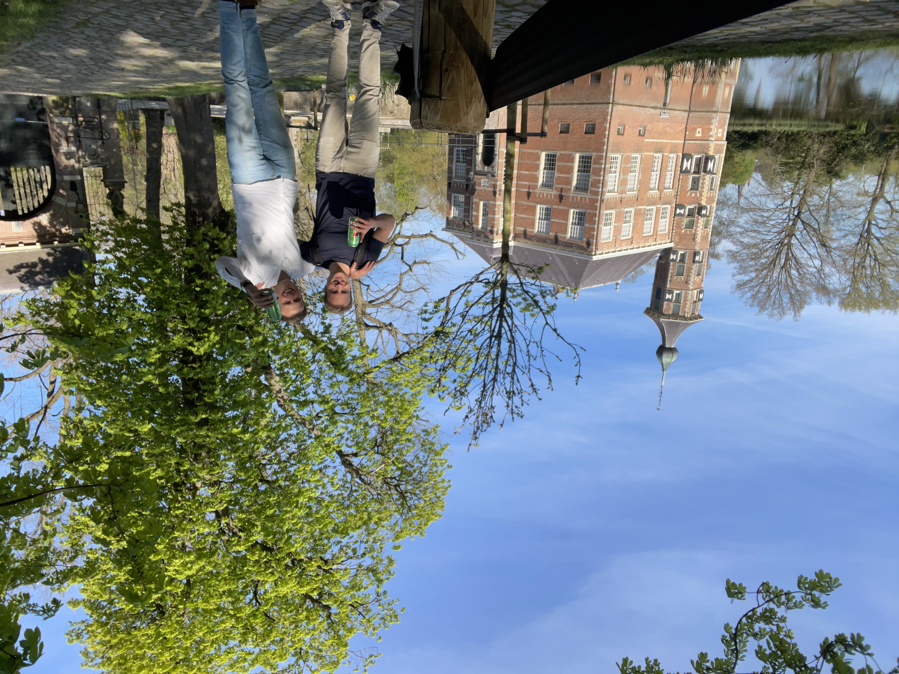

02 De weg tot
programmeur
Over mijn studietijd in Wageningen,
veranderingen in het carrièrepad
en de aanloop naar vertrek

 Daar sta ik dan, aan de vooravond van een gloednieuw avontuur. In een tijd waarin mensen zich met hun laptop over de wereld verplaatsen.
Sommige weten wel dat ik veel van reizen hou, maar om tijdens die reis ook nog eens te kunnen werken en geld te kunnen verdienen is een
unieke mogelijkheid die past bij de tijd waarin we leven. Overal ter wereld kunnen werken zolang je Wi-Fi hebt. De laatste jaren werd
mijn wens steeds groter om voor een langere periode in het buitenland te werken en hier de vaardigheden, geleerd op de Wageningen
Universiteit, in te zetten. Ik verheug me er enorm op om morgen deze wens te laten starten. De mensen waar ik mee samenwerk zullen
grotendeels in Wageningen achterblijven, terwijl ik vanuit het zonnige buitenland zal werken, hoe onwerkelijk!
Daar sta ik dan, aan de vooravond van een gloednieuw avontuur. In een tijd waarin mensen zich met hun laptop over de wereld verplaatsen.
Sommige weten wel dat ik veel van reizen hou, maar om tijdens die reis ook nog eens te kunnen werken en geld te kunnen verdienen is een
unieke mogelijkheid die past bij de tijd waarin we leven. Overal ter wereld kunnen werken zolang je Wi-Fi hebt. De laatste jaren werd
mijn wens steeds groter om voor een langere periode in het buitenland te werken en hier de vaardigheden, geleerd op de Wageningen
Universiteit, in te zetten. Ik verheug me er enorm op om morgen deze wens te laten starten. De mensen waar ik mee samenwerk zullen
grotendeels in Wageningen achterblijven, terwijl ik vanuit het zonnige buitenland zal werken, hoe onwerkelijk!
.jpeg) Mensen die werken in het buitenland worden ook wel expats genoemd en wanneer ze hun geld verdienen door online te werken vanaf verschillende
plekken heten ze digital nomads. De eerste zorg die in mij opkwam was of ik als digital nomad fysieke collega’s niet heel erg zou gaan missen.
Wie groet je goedemorgen en met wie drink je een bak koffie? Als basis- en middelbare school docent haalde ik zo veel energie uit de
omgang met de mensen. De afgelopen jaren is, mede door corona, wereldwijd het aantal digital nomads in een razend tempo toegenomen,
tot zo’n 35 miljoen waarbij een verdubbeling wordt verwacht in slechts een paar jaar. Dit geeft uiteraard de hoop dat ik misschien
geen directe collega’s heb, maar wel veel mensen kan ontmoeten die hetzelfde levenspad bewandelen.
Mensen die werken in het buitenland worden ook wel expats genoemd en wanneer ze hun geld verdienen door online te werken vanaf verschillende
plekken heten ze digital nomads. De eerste zorg die in mij opkwam was of ik als digital nomad fysieke collega’s niet heel erg zou gaan missen.
Wie groet je goedemorgen en met wie drink je een bak koffie? Als basis- en middelbare school docent haalde ik zo veel energie uit de
omgang met de mensen. De afgelopen jaren is, mede door corona, wereldwijd het aantal digital nomads in een razend tempo toegenomen,
tot zo’n 35 miljoen waarbij een verdubbeling wordt verwacht in slechts een paar jaar. Dit geeft uiteraard de hoop dat ik misschien
geen directe collega’s heb, maar wel veel mensen kan ontmoeten die hetzelfde levenspad bewandelen.
Voor mijn studie Bos en Natuurbeheer aan de Wageningen Universiteit, begon ik in december 2020 aan mijn Stage bij Staatsbosbeheer. Ik kreeg de opdracht om de Soerense beek, een beek in de buurt van Arnhem, onder de loep te nemen want deze stond door de opwarming van het klimaat steeds vaker droog. Ik schreef een rapport over het onderzoek naar deze beek waarin onder andere de biodiversiteit, de geschiedenis en de waterkwaliteit aan bod kwam. Het rapport maken en het om de tafel brengen van vertegenwoordigers van omliggende landgoederen, Natuurmonumenten, de gemeenten en omwonenden zorgden voor een fantastische leerervaring. En toch merkte ik dat ik iets miste in de carrièremogelijkheden als ecoloog. Dat er een beperkt aanbod ecologische functies was gaf mij geen goed gevoel. Zo is het niet ongebruikelijk dat afgestudeerde ecologen beginnen met een HBO functie terwijl ze WO geschoold zijn. Toen ik de organisatiestructuur van Staatsbosbeheer bekeek vroeg ik mij af of ik mezelf eventueel in deze organisatie zou zien doorgroeien. En ook baanzekerheid speelde mee. Zodra een kabinet bezuinigt op natuur, is het behoud van je baan nog maar afwachten. Hoewel het fantastisch zou zijn om dagelijks met natuur bezig te zijn, hielden bovenstaande vragen mij bezig.
Na afloop van de stage wilde ik meer leren over de digitale geografische kaarten die ik in het Staatsbosbeheer rapport had gemaakt. Ik had gehoord dat je de kaarten met meer mogelijkheden kon vormgeven wanneer je ze ontwierp via het typen van codes. Dit leek mij erg interessant. Ik sprak af met student assistent Robbert waarvan ik wist dat hij een grote passie had voor programmeren. ‘Nou..’ zei robbert, ‘Je zou het vak GeoScripting kunnen volgen waarbij je van verschillende programmeertalen de basis leert.’ Dat leek mij een uitstekend plan waarop hij vervolgde. ‘En ik weet niet of het je ook wat lijkt maar de periode erna wordt het vak Machine Learning aangeboden.’ Ik had er nog nooit van gehoord maar machine learning bleek een onderdeel van artificial intellgence waarbij centraal staat dat computers menselijke beslissingen na proberen te bootsen. Artificial intelligence, afgekort AI, kende ik uit films van futuristische werelden met robots die ons ooit zouden kunnen gaan helpen in het huishouden. Wat voelde als mijlenver weg kwam opeens een stuk dichtbij. Terwijl ik op het punt stond om mijn spullen in te pakken zei Robbert ‘En trouwens, ik sluit het jaar af met het vak Deep Learning, wat nog een stapje verder gaat aangezien in deep learning door de computer genomen beslissingen gebaseerd zijn op neurale netwerken, vergelijkbaar met hoe signalen doorgegeven worden via neuronen in onze hersenen. Het leek mij gigantisch complex, ik zag totaal niet in wat ik eraan zou hebben maar mijn interesse was gewekt.
 Het pad wat Robbert schetste heb ik precies doorlopen, waarbij de vakken samengebundeld werden tot een minor Data Science, die
essentieel was voor mijn afstudeerscriptie. Ik benaderde hiervoor docent Patrick van de vakgroep Wildlife Ecology and Conservation,
onderzoeker wildcamera’s, omdat hij het meeste raakvlakken had met de computerrichting die ik graag op wilde. Ik was een vreemde
eend in de bijt omdat artifical intelligence al veel werd toegepast binnen de landbouw en veehouderij, maar verrassend genoeg nog
nauwelijks wanneer het ging om natuur. Ik zei ‘Patrick, ik wil dolgraag een thesis doen, maar ik heb de vakken machine- en deep
learning gevolgd en ik sta erop deze spiksplinternieuwe technieken toe te passen in mijn thesis. Na wat wikken en wegen kwamen
we tot het volgende onderzoek ‘Automatische gedragsherkenning van Edelherten op de Veluwe met behulp van deep learning’. Al vlot
na het downloaden van de software kwam ik van een koude kermis thuis. Het zelfstandig typen van codes om de deep learning
algoritmes werkende te krijgen bleek erg complex. Mijn begeleiders, Patrick en collega’s hadden zelf nauwelijks ervaring met
artificial intelligence, laat staan met het complexe programma DeepLabCut waar een selecte groep, voornamelijk ervaren programmeurs,
mee werken. De onverwachte problemen stapelden zich op omdat mijn PC niet krachtig genoeg was, omdat het niet lukte om mijn
dataset te splitsen, variërende foto dimensies, een cijfer verkeerd hebben staan waardoor je niet verder kan, tot errors met
ontelbaar mogelijke oorzaken. Dan vroeg ik het na op het forum, wat zo een aantal dagen kon duren en als ik geluk had kwam er
reactie waaruit bijvoorbeeld bleek dat er een komma verkeerd stond. Het werd uiteindelijk een jaar durende monsterklus die ik
inleverde op 1 april 2022.
Het pad wat Robbert schetste heb ik precies doorlopen, waarbij de vakken samengebundeld werden tot een minor Data Science, die
essentieel was voor mijn afstudeerscriptie. Ik benaderde hiervoor docent Patrick van de vakgroep Wildlife Ecology and Conservation,
onderzoeker wildcamera’s, omdat hij het meeste raakvlakken had met de computerrichting die ik graag op wilde. Ik was een vreemde
eend in de bijt omdat artifical intelligence al veel werd toegepast binnen de landbouw en veehouderij, maar verrassend genoeg nog
nauwelijks wanneer het ging om natuur. Ik zei ‘Patrick, ik wil dolgraag een thesis doen, maar ik heb de vakken machine- en deep
learning gevolgd en ik sta erop deze spiksplinternieuwe technieken toe te passen in mijn thesis. Na wat wikken en wegen kwamen
we tot het volgende onderzoek ‘Automatische gedragsherkenning van Edelherten op de Veluwe met behulp van deep learning’. Al vlot
na het downloaden van de software kwam ik van een koude kermis thuis. Het zelfstandig typen van codes om de deep learning
algoritmes werkende te krijgen bleek erg complex. Mijn begeleiders, Patrick en collega’s hadden zelf nauwelijks ervaring met
artificial intelligence, laat staan met het complexe programma DeepLabCut waar een selecte groep, voornamelijk ervaren programmeurs,
mee werken. De onverwachte problemen stapelden zich op omdat mijn PC niet krachtig genoeg was, omdat het niet lukte om mijn
dataset te splitsen, variërende foto dimensies, een cijfer verkeerd hebben staan waardoor je niet verder kan, tot errors met
ontelbaar mogelijke oorzaken. Dan vroeg ik het na op het forum, wat zo een aantal dagen kon duren en als ik geluk had kwam er
reactie waaruit bijvoorbeeld bleek dat er een komma verkeerd stond. Het werd uiteindelijk een jaar durende monsterklus die ik
inleverde op 1 april 2022.
Het was vaak alleen werken en heel veel zelf uitvogelen. Wonder boven wonder heb ik de meest uiteenlopende mensen bij elkaar weten te verzamelen die mij geholpen hebben. Een geweldige PhD student Helena van de vakgroep Farm Technology, Ramon een programmeur uit Deventer en Brandon, een op internet ontmoette vader uit Amerika, die mij allen vrijwillig hielpen om naar de scripts te kijken. Daarnaast waren er ook mensen van de universiteit die simpelweg zeiden dat ze geen tijd hadden of geen uren kregen voor het begeleiden van studenten. Enfin, de thesis werd beoordeeld met een 8,5 en ik was apentrots dat ik voor zover bekend de eerste student Bos en Natuurbeheer ben die heeft gepionierd met artificieel intelligence. Uiteraard was ik daarnaast ook opgelucht dat ik dit hoofdstuk eindelijk kon gaan afsluiten.
 Het diploma was binnen. Met een druk op de knop kon de computer voor een foto het gedrag van het dier bepalen. Voor iedereen te begrijpen
terwijl de weg erheen zo complex. ‘Het model’ wat af was gaf zo’n voldoening dat ik ondanks de tegenslagen zeker wist dat ik mezelf
verder wilde ontwikkelen in artificial intelligence. Bij een bedrijf of als promovendus/PhDer? Ik wist nog niet precies wat ik wilde
waardoor een logische vervolgstap was om mijn scriptie te publiceren. Je gaat dan jou onderzoek bekend gaat maken aan een groot
publiek bijvoorbeeld via een wetenschappelijk tijdschrift. Anders dan tijdens mijn thesis was er nu veel meer belangstelling om er
samen aan te werken. Dit heeft onder andere te maken omdat mensen nu ook co auteur konden worden en academici nou eenmaal veel
artikelen moeten publiceren. Hoewel de verandering in hulp en betrokkenheid wel even wennen was, ben ik erg blij om nu op gelijk
niveau te kunnen samenwerken met mensen die gespecialiseerd zijn in AI.
Het diploma was binnen. Met een druk op de knop kon de computer voor een foto het gedrag van het dier bepalen. Voor iedereen te begrijpen
terwijl de weg erheen zo complex. ‘Het model’ wat af was gaf zo’n voldoening dat ik ondanks de tegenslagen zeker wist dat ik mezelf
verder wilde ontwikkelen in artificial intelligence. Bij een bedrijf of als promovendus/PhDer? Ik wist nog niet precies wat ik wilde
waardoor een logische vervolgstap was om mijn scriptie te publiceren. Je gaat dan jou onderzoek bekend gaat maken aan een groot
publiek bijvoorbeeld via een wetenschappelijk tijdschrift. Anders dan tijdens mijn thesis was er nu veel meer belangstelling om er
samen aan te werken. Dit heeft onder andere te maken omdat mensen nu ook co auteur konden worden en academici nou eenmaal veel
artikelen moeten publiceren. Hoewel de verandering in hulp en betrokkenheid wel even wennen was, ben ik erg blij om nu op gelijk
niveau te kunnen samenwerken met mensen die gespecialiseerd zijn in AI.
 In Wageningen merkte ik dat mijn tijd als student voorbij aan het gaan was, bijvoorbeeld wanneer ik bij de roeivereniging vertelde
dat ik 29 jaar en afgestudeerd was. Ik voelde mij opeens super oud terwijl ik op mijn 27e nog vol het studentenleven in dook.
Inspanningen voor het opbouwen van nieuwe vriendschappen liepen niet meer zoals eerst. Samen met Mark, mijn oude roeicoach,
hebben we op de vereniging nog een paar maandjes krachttraining gedaan, wat een heerlijke structuur gaf aan de dagen. Geen student
meer maar ook nog niet aan een baan voelde als vallen tussen wal en schip. Geen grip op de toekomst en het besef dat ik het geplande
artikel overal ter wereld kan schrijven zolang ik Wi-Fi heb, leidde tot de gedachte ‘Waarom verhuis ik niet naar een warm land?’.
Er zijn heel veel remote workers en ik hoop heel erg dat ik zelfs een aantal mensen ga ontmoeten die zich ook met artificial
intelligence bezighouden, zodat ik straks misschien wel meer mensen heb om mee te sparren dan in mijn tijd aan de Wageningen
Universiteit. Natuurlijk hoeft het lekkere weer, de ontspannen cultuur, de dans en het lekkere Mediterraanse eten ook niet
verkeerd te zijn. En zo startte de rollercoaster om in korte zo veel mogelijk te sparen, afscheid te nemen van het studentenhuis,
het verzorgingshuis en vrienden. Natuurlijk waren mijn laatste dagen in Bavel. Samen met kameraad Rob gaven we in een afgeladen
café De Publieke Werken in Breda een fantastisch feest met 75 vrienden waaronder ook vrienden die speciaal uit Wageningen waren
gekomen.
In Wageningen merkte ik dat mijn tijd als student voorbij aan het gaan was, bijvoorbeeld wanneer ik bij de roeivereniging vertelde
dat ik 29 jaar en afgestudeerd was. Ik voelde mij opeens super oud terwijl ik op mijn 27e nog vol het studentenleven in dook.
Inspanningen voor het opbouwen van nieuwe vriendschappen liepen niet meer zoals eerst. Samen met Mark, mijn oude roeicoach,
hebben we op de vereniging nog een paar maandjes krachttraining gedaan, wat een heerlijke structuur gaf aan de dagen. Geen student
meer maar ook nog niet aan een baan voelde als vallen tussen wal en schip. Geen grip op de toekomst en het besef dat ik het geplande
artikel overal ter wereld kan schrijven zolang ik Wi-Fi heb, leidde tot de gedachte ‘Waarom verhuis ik niet naar een warm land?’.
Er zijn heel veel remote workers en ik hoop heel erg dat ik zelfs een aantal mensen ga ontmoeten die zich ook met artificial
intelligence bezighouden, zodat ik straks misschien wel meer mensen heb om mee te sparren dan in mijn tijd aan de Wageningen
Universiteit. Natuurlijk hoeft het lekkere weer, de ontspannen cultuur, de dans en het lekkere Mediterraanse eten ook niet
verkeerd te zijn. En zo startte de rollercoaster om in korte zo veel mogelijk te sparen, afscheid te nemen van het studentenhuis,
het verzorgingshuis en vrienden. Natuurlijk waren mijn laatste dagen in Bavel. Samen met kameraad Rob gaven we in een afgeladen
café De Publieke Werken in Breda een fantastisch feest met 75 vrienden waaronder ook vrienden die speciaal uit Wageningen waren
gekomen.
Het wordt een spannende tijd vol nieuwe ontmoetingen en zonnige avonturen. Ik heb er ontzettend veel zin in en ga de mensen om mij heen heel erg missen. Even een vertrouwd gesprek met iemand die je zo goed kent. Bejaarde vrouw Ger zei tegen mij ‘En dan kom je zeker met hangende pootjes terug’. Je weet het natuurlijk nooit. Ik kan niet wachten om een nieuwe start te maken. We gaan er wat van maken, leuk dat je via deze weg ook onderdeel bent van ‘The Expat Experience’. Binnenkort meer!
.jpeg)